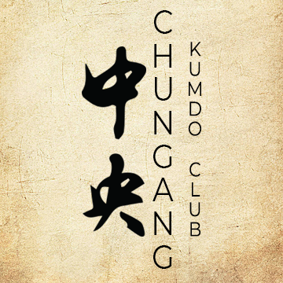

Kengo Dojos in Ho Chi Minh City, Vietnam

Nitoukan Kendo Iaido Vietnam
Address: 219 Ly Thuong Kiet Street, Ward 15, District 11, Ho Chi Minh City
Official Page
Saigon Kendo Club
Address: 215C Ly Thuong Kiet Street, Ward 15, District 11, Ho Chi Minh City
Official Page
Kenyukai Kendo HCM
Address: 107F Chu Van An Street, Ward 26, Binh Thanh District, Ho Chi Minh City
Official Page

HCMC ChungAng Kumdo Club
Address: 5 Le Van Luong Street, Phuoc Kien Commune, Nha Be District, Ho Chi Minh City
Official PageOimatsu Kendo Club
Address: 91/7 Tran Quoc Hoan Street, Ward 4, Tan Binh District, Ho Chi Minh City
Official PageDaido Kendo Club
Address: 8 Phan Dang Luu Street, Ward 14, Binh Thanh District, Ho Chi Minh City
Official Page